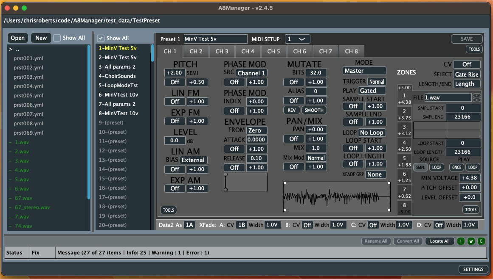

Instructions for installing on OSX
Since the application is not signed (I don’t want to pay the $99/yr) you will have to do a manual step in the console to allow it to run.
Download for OS X
Download A8Manager_osx.zip, the app will be automatically extracted during download
Use the following command to allow it to run
xattr -d com.apple.quarantine ~/Downloads/A8Manager.app
You can now run it. You can move it to the Applications folder if you do desire
